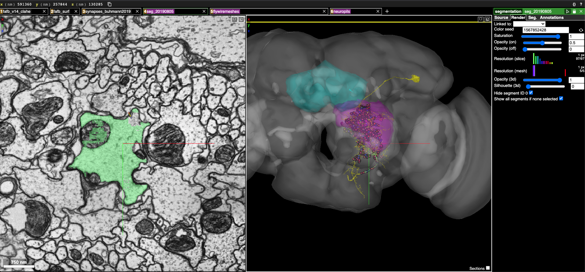

Co-plotting flywire mesh with FAFB autosegments¶
This section contains example of fetching meshes from flywire and co-plotting with automatically segmented data in FAFB¶
Import neccesary library modules now¶
[1]:
import navis
import fafbseg
import pymaid
[2]:
import pandas as pd
import numpy as np
import os
from copy import deepcopy
[3]:
from pyroglancer.layers import create_nglayer
from pyroglancer.localserver import startdataserver, closedataserver
from pyroglancer.ngviewer import openviewer, closeviewer
from pyroglancer.ngspaces import create_ngspace
from pyroglancer.createconfig import createconfig
Fetch meshes from flywire¶
[4]:
#set the flywire token here if you haven't set before..
#fafbseg.flywire.set_chunkedgraph_secret("blabla")
[5]:
#mesh in flywire for which to find a match..
flywire_id = 720575940633919863
[6]:
# Fetch the neuron's mesh
putativeDNa02_a = fafbseg.flywire.get_mesh_neuron(flywire_id)
putativeDNa02_a
[6]:
| type | navis.MeshNeuron |
|---|---|
| name | None |
| id | 720575940633919863 |
| units | 1 nanometer |
| n_vertices | 785994 |
| n_faces | 1575396 |
Transform flywire meshes to fafb¶
[7]:
DNa02_xyz = pd.DataFrame(list(map(np.ravel, putativeDNa02_a.vertices)), columns=['x', 'y', 'z'])
[8]:
#move the vertices of the flywire mesh to fafb..
fafb_putativeDNa02_xyz = navis.xform_brain(DNa02_xyz, source='FLYWIRE', target='FAFB14')
Transform path: FLYWIRE -> FLYWIREraw -> FAFB14raw -> FAFB14
[9]:
fafb_putativeDNa02_a = putativeDNa02_a.copy()
[10]:
#put the transformed vertices in the new mesh..
fafb_putativeDNa02_a.vertices = fafb_putativeDNa02_xyz.to_numpy()
[11]:
#perform a bit of conversion to navis volumes..
fafb_putativeDNa02_a = navis.core.volumes.Volume(fafb_putativeDNa02_a)
fafb_putativeDNa02_a.id = flywire_id
fafb_putativeDNa02_a.name = 'putative_DNa02'
fafb_putativeDNa02_a
[11]:
<navis.Volume(name=putative_DNa02, id=720575940633919863, color=(0.85, 0.85, 0.85, 0.2), vertices.shape=(785994, 3), faces.shape=(1575396, 3))>
Fetch neuropils from catmaid for display¶
[12]:
publicurl = 'https://fafb.catmaid.virtualflybrain.org/'
[13]:
working_rm = pymaid.CatmaidInstance(publicurl, api_token=None, project_id = 1)
INFO : Global CATMAID instance set. Caching is ON. (pymaid)
INFO - 2021-05-19 23:36:12,510 - client - Global CATMAID instance set. Caching is ON.
[14]:
#fetch the LAL neuropil mesh..
LAL_neuropil = pymaid.get_volume('LAL_L', color=(255, 0, 0, .2))
[15]:
#perform a bit of conversion to navis volumes..
LAL_neuropil = navis.core.volumes.Volume(LAL_neuropil)
LAL_neuropil.id = 100
LAL_neuropil.name = 'LAL_L'
LAL_neuropil
[15]:
<navis.Volume(name=LAL_L, id=100, color=(0.85, 0.85, 0.85, 0.2), vertices.shape=(402, 3), faces.shape=(800, 3))>
[16]:
#fetch the FB neuropil mesh..
FB_neuropil = pymaid.get_volume('FB', color=(0, 255, 0, .2))
INFO : Cached data used. Use `pymaid.clear_cache()` to clear. (pymaid)
INFO - 2021-05-19 23:36:12,900 - client - Cached data used. Use `pymaid.clear_cache()` to clear.
[17]:
#perform a bit of conversion to navis volumes..
FB_neuropil = navis.core.volumes.Volume(FB_neuropil)
FB_neuropil.id = 200
FB_neuropil.name = 'FB'
FB_neuropil
[17]:
<navis.Volume(name=FB, id=200, color=(0.85, 0.85, 0.85, 0.2), vertices.shape=(614, 3), faces.shape=(1224, 3))>
Start dataserver to host precomputed data¶
[18]:
startdataserver()
Serving data from: /var/folders/_l/lrfvj_8j3ps0c37ncbr3c8dh0000gn/T/tmprbh5_3bl
Serving directory at http://127.0.0.1:8000
Start a basic neuroglancer local session with all FAFB configurations¶
[19]:
configdata = [dict(
ngspace='FAFB',
dimension=dict(x=1, y=1,z=1,units='um'),
voxelsize=dict(x=4,y=4,z=40,units='nm'),
layers=dict(
fafb_v14_clahe=dict(
type='image',
source='precomputed://gs://neuroglancer-fafb-data/fafb_v14/fafb_v14_clahe'),
fafb_surf=dict(
type='surfacemesh',
source='vtk://https://storage.googleapis.com/neuroglancer-fafb-data/elmr-data/FAFB.surf.vtk.gz'),
synapses_buhmann2019=dict(
type='synapsepred',
source='precomputed://gs://neuroglancer-20191211_fafbv14_buhmann2019_li20190805',
linkedseg='seg_20190805'),
seg_20190805=dict(
type='segmentation',
source='precomputed://gs://fafb-ffn1-20190805/segmentation',
))
)]
[20]:
configfileloc = '/Users/sri/.pyroglancer/config_temp.yml'
[21]:
createconfig(configdata, configfileloc, overwrite = True)
adding default config file..
setting default config file loc
[22]:
layer_kws = {'ngspace': 'FAFB'}
[23]:
create_ngspace(layer_kws)
config file loc is at: None
using default location at: /Users/sri/.pyroglancer/config_temp.yml
Neuroglancer viewer created at: http://127.0.0.1:60881/v/0e89a7ba7e856fff29b23295854df3ec6ac9ab38/
config file loc is at: None
using default location at: /Users/sri/.pyroglancer/config_temp.yml
Dimensions are in : FAFB
Layer created: image
config file loc is at: None
using default location at: /Users/sri/.pyroglancer/config_temp.yml
Using layout : xy-3d
config file loc is at: None
using default location at: /Users/sri/.pyroglancer/config_temp.yml
Dimensions are in : FAFB
Layer created: surfacemesh
config file loc is at: None
using default location at: /Users/sri/.pyroglancer/config_temp.yml
Using layout : xy-3d
config file loc is at: None
using default location at: /Users/sri/.pyroglancer/config_temp.yml
Dimensions are in : FAFB
Layer created: synapsepred
config file loc is at: None
using default location at: /Users/sri/.pyroglancer/config_temp.yml
Using layout : xy-3d
config file loc is at: None
using default location at: /Users/sri/.pyroglancer/config_temp.yml
Dimensions are in : FAFB
Layer created: segmentation
config file loc is at: None
using default location at: /Users/sri/.pyroglancer/config_temp.yml
Using layout : xy-3d
Inject the neuron mesh and neuropils¶
[24]:
tmpviewer = create_nglayer(layer_kws = {'type': 'volumes','source': fafb_putativeDNa02_a,
'name': 'flywiremeshes','color': 'yellow'})
config file loc is at: None
using default location at: /Users/sri/.pyroglancer/config_temp.yml
Dimensions are in : FAFB
Layer created: volumes
mesh/720575940633919863
Seg id is: 720575940633919863
Full filepath: /private/var/folders/_l/lrfvj_8j3ps0c37ncbr3c8dh0000gn/T/tmprbh5_3bl/precomputed/flywiremeshes/mesh/720575940633919863
creating: /private/var/folders/_l/lrfvj_8j3ps0c37ncbr3c8dh0000gn/T/tmprbh5_3bl/precomputed/flywiremeshes/mesh/segment_properties
creating: /private/var/folders/_l/lrfvj_8j3ps0c37ncbr3c8dh0000gn/T/tmprbh5_3bl/precomputed/flywiremeshes/mesh/segment_names
Using layout : xy-3d
[25]:
tmpviewer = create_nglayer(layer_kws = {'type': 'volumes','source': [LAL_neuropil,FB_neuropil],
'name': 'neuropils','color': ['magenta', 'cyan'], 'alpha': 0.3})
config file loc is at: None
using default location at: /Users/sri/.pyroglancer/config_temp.yml
Dimensions are in : FAFB
Layer created: volumes
mesh/100
Seg id is: 100
Full filepath: /private/var/folders/_l/lrfvj_8j3ps0c37ncbr3c8dh0000gn/T/tmprbh5_3bl/precomputed/neuropils/mesh/100
mesh/200
Seg id is: 200
Full filepath: /private/var/folders/_l/lrfvj_8j3ps0c37ncbr3c8dh0000gn/T/tmprbh5_3bl/precomputed/neuropils/mesh/200
creating: /private/var/folders/_l/lrfvj_8j3ps0c37ncbr3c8dh0000gn/T/tmprbh5_3bl/precomputed/neuropils/mesh/segment_properties
creating: /private/var/folders/_l/lrfvj_8j3ps0c37ncbr3c8dh0000gn/T/tmprbh5_3bl/precomputed/neuropils/mesh/segment_names
Using layout : xy-3d
127.0.0.1 - - [19/May/2021 23:36:13] "GET /precomputed/flywiremeshes/mesh/info HTTP/1.1" 200 -
127.0.0.1 - - [19/May/2021 23:36:13] "GET /precomputed/neuropils/mesh/info HTTP/1.1" 200 -
127.0.0.1 - - [19/May/2021 23:36:13] "GET /precomputed/flywiremeshes/mesh/segment_properties/info HTTP/1.1" 200 -
127.0.0.1 - - [19/May/2021 23:36:13] "GET /precomputed/neuropils/mesh/segment_properties/info HTTP/1.1" 200 -
127.0.0.1 - - [19/May/2021 23:36:46] "GET /precomputed/flywiremeshes/mesh/720575940633919863:0 HTTP/1.1" 200 -
127.0.0.1 - - [19/May/2021 23:36:46] "GET /precomputed/flywiremeshes/mesh/720575940633919863 HTTP/1.1" 200 -
127.0.0.1 - - [19/May/2021 23:38:04] "GET /precomputed/neuropils/mesh/100:0 HTTP/1.1" 200 -
127.0.0.1 - - [19/May/2021 23:38:04] "GET /precomputed/neuropils/mesh/200:0 HTTP/1.1" 200 -
127.0.0.1 - - [19/May/2021 23:38:04] "GET /precomputed/neuropils/mesh/100 HTTP/1.1" 200 -
127.0.0.1 - - [19/May/2021 23:38:04] "GET /precomputed/neuropils/mesh/200 HTTP/1.1" 200 -
After injection poke around the flywire mesh¶
The yellow mesh is the flywire neuron mesh and the green mesh is the fafb poke around match. The magenta region is the LAL, and the cyan region is the FB. The red dots are presynapses, the blue dots are postsynapses. You can see that the putative DNa02_a is indeed getting many synapses from LAL¶

Close the viewer and dataserver¶
[26]:
closeviewer()
closing already existing ng viewer
[27]:
closedataserver()
Closing server at http://127.0.0.1:8000
Cleaning directory at /private/var/folders/_l/lrfvj_8j3ps0c37ncbr3c8dh0000gn/T/tmprbh5_3bl